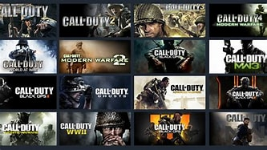

História da Activision Blizzar
Em 2008, a Activision e a Blizzard Entertainment se uniram para formar a Activision Blizzard, uma das maiores empresas de entretenimento interativo do mundo. Essa fusão combinou o catálogo diversificado de jogos das duas empresas e estabeleceu a Activision Blizzard como uma potência na indústria de videogames.
Posicionamento na Indústria
A Activision Blizzard desfruta de uma posição de destaque na indústria de jogos, com um portfólio diversificado de franquias populares e uma base de fãs global. A empresa é conhecida por sua abordagem inovadora no desenvolvimento e publicação de jogos, bem como por sua presença constante em eventos e competições de eSports.

Desenvolvedores e Estúdios
A série Call of Duty é desenvolvida por diversos estúdios dentro da Activision Blizzard, cada um trazendo sua própria visão e expertise para os jogos. Estúdios como Infinity Ward são conhecidos por sua abordagem de narrativa emocional, enquanto Treyarch é reconhecido por suas mecânicas inovadoras de jogabilidade.
Controvérsias e Críticas
Apesar de seu sucesso, a Activision Blizzard enfrentou críticas em relação a práticas comerciais controversas, como microtransações consideradas excessivas e condições de trabalho inadequadas em alguns de seus estúdios. Essas questões têm sido objeto de debate dentro da comunidade de jogadores e da indústria de videogames como um todo.
Impacto Cultural e Social
A franquia Call of Duty teve um impacto significativo na cultura popular e na indústria de videogames. Seus jogos muitas vezes abordam questões sociais e políticas, enquanto sua popularidade e influência se estendem além do mundo dos videogames para filmes, televisão e outras formas de mídia.
.jpg)